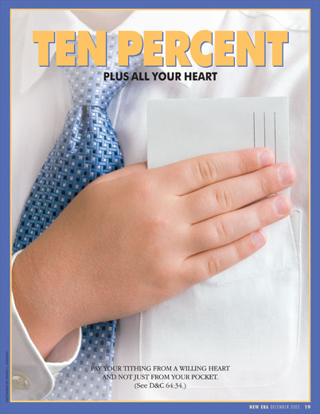

Tithing
And he said unto them, Render therefore unto Caesar the things
which be Caesar’s, and unto God the things which be God’s. -Luke 20:25
which be Caesar’s, and unto God the things which be God’s. -Luke 20:25
So, there's been a lot of hoopla about Mitt Romney and the money he's paid in taxes, and to charity. People are making a big deal out of the fact that he pays so little in taxes, and that he's finding loopholes with which to pay less taxes. First off, please stop being hypocrites. I don't care how much you make, or will, or whatever, you will always look for any and all ways to pay less taxes. And if you think to say, "oh, I won't, that's irresponsible, you should pay the government the money, they need it!" Nope. Why would giving your money to an establishment that is notoriously mis-managed, corrupt and in such dire straits financially be a good thing? I would say that's irresponsible. Moving on; Romney has paid his taxes, is not a tax evader (like much of Obama's staff) and is something of a philanthropist. More so than any other relevant politician at this time (see here). He's also kept the law of tithing, and has been shown to pay a bit more than required. So we can safely say that he has kept the commandment given above, by Christ, in the book of Luke.
On to the subject matter: tithing. What is it? I believe that tithing is a portion (10%) of your income, given as a voluntary donation to the church. A 1970 letter from the First Presidency stated that:
notwithstanding the
fact that members should pay one-tenth of their
income,"every member of
the Church is entitled to make his own decision
as to what he thinks he
owes the Lord and to make payment accordingly".
Hence, the exact amount paid is not as important as
that each member feels that he or she has paid an honest tenth. Some want to say it's a requirement to be a member, it is not. It IS, however, a requirement to be a member in good standing, and to be able to enter the Temple.
TANGENT: Mormons have different kinds of buildings used for different purposes in the church. Firstly, there are the church building, then there are the Temples. The churches are used for regular worship every Sunday, and occasionally for activities and meetings throughout the week. Temples, on the other hand, are a holier place where we go to be closer to God and to perform more sacred rituals, like marriage for time and all eternity (more on that in a later post). Think of it like this: a church building is basically like a Jewish Synagogue, and the Temple is like Solomon's Temple. Did they let just any 'ole person into the Temple in Jerusalem? Nope. Only worthy Jewish people could enter. Back to my point.
To be a member in good standing with the ability to enter the temple, yes, you are required to pay your tithing. You are also required to keep all of the other commandments too. Tithing is a commandment, and if it's not kept, you cannot be considered a person doing their utmost to keep the commandments. If you decide you don't want to pay your tithing, that's fine, that's what free agency is about (more on that in the future too, basically the freedom to choose). If you don't pay your tithing, you can still attend church, you can attend functions, you can even get counseling from the Bishop and attend General Conference! Most people won't even know whether you pay your tithing or not, and honestly, nobody cares! (if they do, well, they shouldn't). No major life changes, no excommunication, no "shunning". You simple cannot enter the temple. Tithing, like most commandments, are between you and the Lord. Only he can (and will) judge you.
The next question is, what does the church DO with all that money? Tithing funds are always used for the Lord's purposes—such purposes as the building and maintenance of meetinghouses, temples, and other facilities, as well as for the partial support of the missionary, educational, and Welfare programs of the Church, not just in the United States, but all over the world.
 |
| The heart is the important thing here, not the money. |
The next question is, what does the church DO with all that money? Tithing funds are always used for the Lord's purposes—such purposes as the building and maintenance of meetinghouses, temples, and other facilities, as well as for the partial support of the missionary, educational, and Welfare programs of the Church, not just in the United States, but all over the world.
Bring ye all the tithes into the storehouse, that there may be meat in mine house,
and prove me now herewith, saith the Lord of hosts, if I will not open you the
windows of heaven, and pour you out a blessing, that there shall not be room
enough to receive it. -Malachi 3:10
I love this scripture, because the Lord is basically issuing us a challenge; "Prove me wrong" he says, "Pay your tithing, and see if I don't bless you for it!" I believe very strongly in the law of tithing. I believe wholeheartedly in the blessings promised when we pay our tithing. Catherine and I have begun to call it our "48 hour rule". It seems that, especially when we are having especially difficult times, whether we are struggling financially or otherwise, when we pay our tithing, we are richly blessed in some way, and the blessing comes (usually) within that 48 hour time period. I will continue to pay my tithing even if the money could have been used to save my life, I will trust in the Lord first, and pay my tithing. It hasn't failed me yet, and I don't expect it to anytime soon.
So yes, tithing is a requirement in that it is a commandment. But in the end, as with all of the commandments; it's your prerogative whether to follow the commandment, or not.
This post originally embedded a video. Open the original video.
{kind=link}